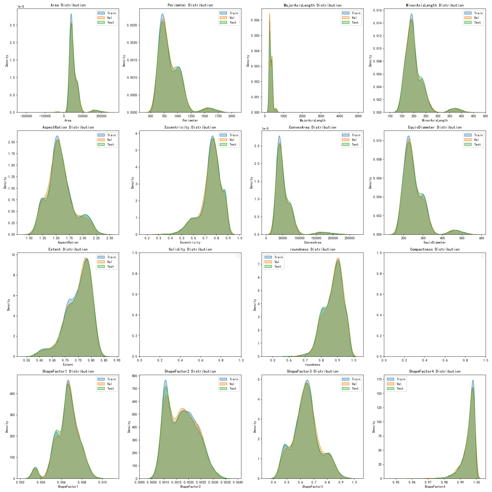
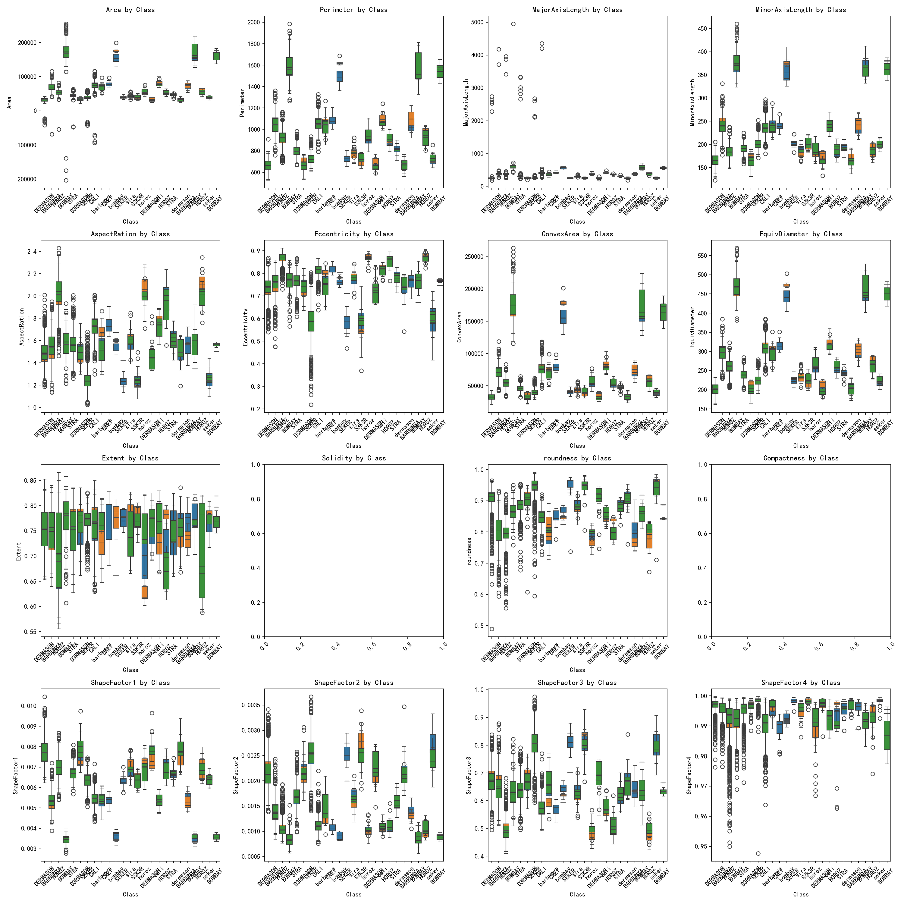
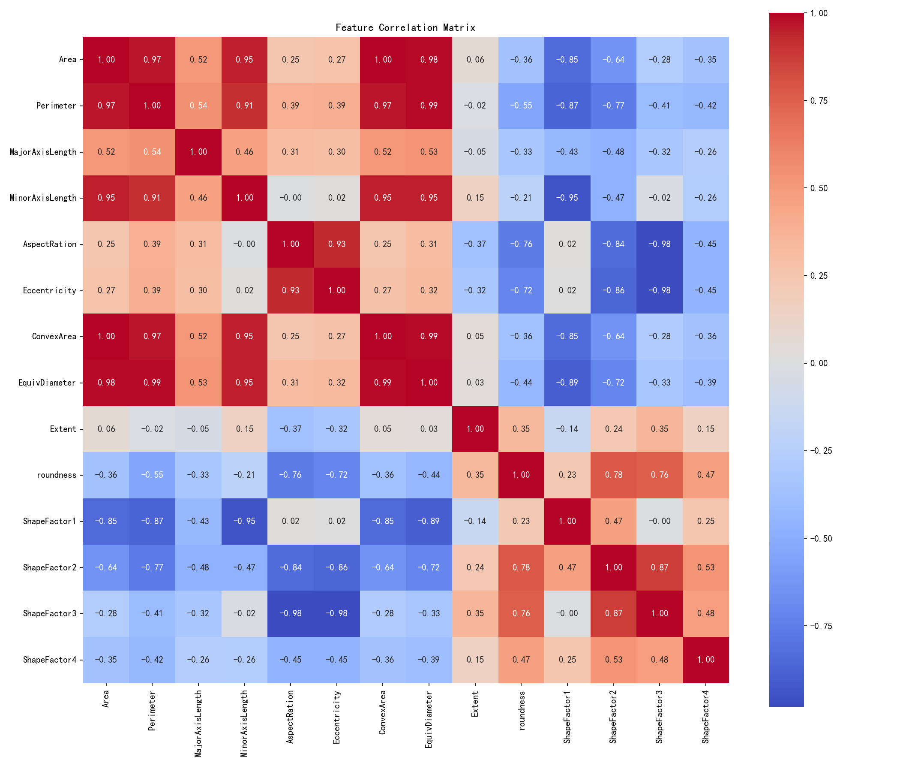
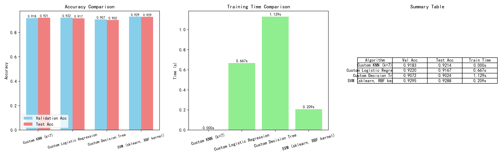
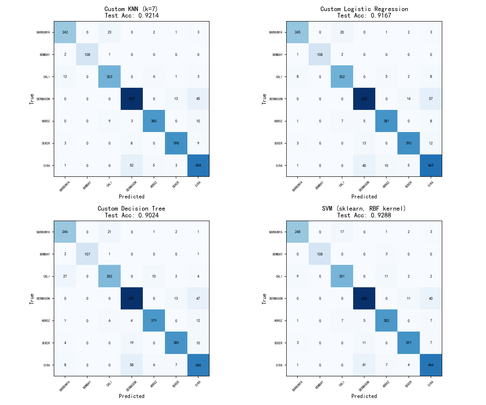
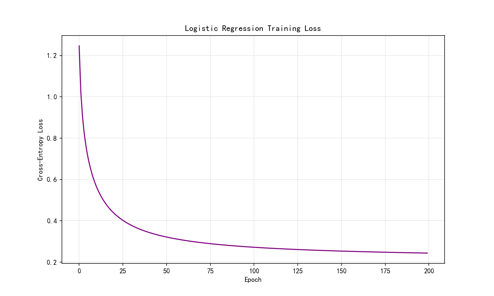

An end-to-end machine learning pipeline — from raw data to model evaluation.
Custom KNN, Logistic Regression & Decision Tree, benchmarked against scikit-learn SVM.
The UCI Dry Bean Dataset is a widely used multi-class classification dataset collected by Koklu & Ozkan (2020) from Selcuk University, Turkey. It contains 13,611 samples of seven Turkish dry bean varieties, with 16 geometric shape features extracted from high-resolution images.
| # | Feature | Meaning | Unit | Range (Train) |
|---|---|---|---|---|
| 1 | Area | Bean area (pixel count) | px² | 20,420 – 254,616 |
| 2 | Perimeter | Bean perimeter length | px | 524.93 – 1,985.37 |
| 3 | MajorAxisLength | Length of the major ellipse axis | px | 183.60 – 4,951.02 |
| 4 | MinorAxisLength | Length of the minor ellipse axis | px | 129.58 – 460.20 |
| 5 | AspectRation | Major / Minor axis ratio | — | 1.02 – 2.39 |
| 6 | Eccentricity | Eccentricity of the fitted ellipse | — | 0.22 – 0.91 |
| 7 | ConvexArea | Convex hull area | px² | 20,684 – 263,261 |
| 8 | EquivDiameter | Diameter of circle with same area | px | 161.24 – 569.37 |
| 9 | Extent | Area / bounding box area ratio | — | 0.56 – 0.87 |
| 10 | Solidity | Area / convex hull area ratio | — | 0.49 – 0.99 |
| 11 | roundness | Roundness (4×Area / π×MajorAxis²) | — | 0.49 – 0.99 |
| 12 | Compactness | Compactness (√(4×Area/π) / MajorAxis) | — | 0.42 – 0.97 |
| 13 | ShapeFactor1 | Shape factor 1 | — | 0.003 – 0.010 |
| 14 | ShapeFactor2 | Shape factor 2 | — | 0.001 – 0.004 |
| 15 | ShapeFactor3 | Shape factor 3 | — | 0.42 – 0.97 |
| 16 | ShapeFactor4 | Shape factor 4 | — | 0.95 – 1.00 |
| Class | 中文 | Train | Ratio |
|---|---|---|---|
| DERMASON | 德马森豆 | 2,503 | 26.27% |
| SIRA | 西拉豆 | 1,837 | 19.28% |
| SEKER | 塞克尔豆 | 1,408 | 14.78% |
| HOROZ | 霍罗兹豆 | 1,340 | 14.07% |
| CALI | 卡利豆 | 1,151 | 12.08% |
| BARBUNYA | 巴布尼亚豆 | 927 | 9.73% |
| BOMBAY | 孟买豆 | 361 | 3.79% |
The dataset was artificially contaminated to simulate real-world data quality issues, including missing values and label noise. Proper handling of these issues was critical for model performance.
Two features — Perimeter and Solidity — had empty-string cells stored as object dtype. After converting to numeric, missing values were filled with the median of each feature. Median was chosen over mean because it is robust to outliers (the test set contains extreme negative Area values).
| Feature | Missing | % | Strategy |
|---|---|---|---|
| Perimeter | 469 | 4.92% | Median fill |
| Solidity | 272 | 2.86% | Median fill |
The original label column contained 25 different variants of the 7 true class names. The noise included:
DERMASON vs dermasonDERMASON , CALI D3RMAS0N, S3K3R, H0R0ZA mapping dictionary was built to normalize all 25 variants into the 7 standard classes. This preserved 100% of samples — no data was discarded.
Features have vastly different scales — Area ranges from ~20,000 to ~255,000 while ShapeFactor1 is ~0.003 to ~0.010. Z-score standardization was applied so that all features have mean=0 and variance=1, which is essential for distance-based algorithms like KNN and SVM.
Critical detail: The mean and standard deviation are computed only on the training set. The validation and test sets use the same parameters to prevent data leakage.
16 geometric features analyzed across train/val/test splits, per-class distributions, and pairwise correlations.



Three algorithms implemented from scratch in pure NumPy (KNN, Softmax Logistic Regression, CART Decision Tree), benchmarked against scikit-learn's optimized SVM.
A non-parametric, instance-based (lazy) learning algorithm. It stores all training samples and classifies new samples by majority vote among the K closest training points in feature space.
| Parameter | Value |
|---|---|
| K | 7 (tuned via validation) |
| Distance | Euclidean (L2) |
| Voting | Majority |
Complexity: Train O(1), Predict O(n×d). Fastest training (0.000s) but slowest prediction.
A multi-class generalization of binary logistic regression. Instead of sigmoid, it uses the Softmax function to convert linear outputs into a probability distribution over all 7 classes.
| Parameter | Value |
|---|---|
| Learning rate | 0.05 |
| Epochs | 200 |
| Batch size | 512 |
| Optimizer | Mini-batch SGD |
| Weight init | N(0, 0.01) |
Full implementation: algorithms/logistic_regression.py
Implements a Classification and Regression Tree using Gini impurity as the splitting criterion. The tree is built recursively — at each node it searches over all features and 9 percentile thresholds to find the split that maximizes Gini gain.
| Parameter | Value | Purpose |
|---|---|---|
| max_depth | 15 | Limit tree depth |
| min_samples_split | 20 | Minimum samples to split |
| min_samples_leaf | 5 | Minimum leaf size |
Splitting strategy: For each feature, evaluate 9 percentile thresholds (10%–90%). This is more efficient than checking every unique value.
Full implementation: algorithms/decision_tree.py
Used as the open-source benchmark. SVM finds the optimal hyperplane that maximizes the margin between classes. For non-linear data, the RBF (Radial Basis Function) kernel projects samples into a higher-dimensional space where they become linearly separable.
| Parameter | Value |
|---|---|
| Kernel | RBF |
| C (regularization) | 1.0 |
| gamma | 'scale' (auto) |
Wrapper: models/svm.py
Four dimensions of evaluation: accuracy, training speed, overfitting analysis, and noise robustness.
| Algorithm | Type | Val Acc | Test Acc | Train Time | Val–Test Gap | Overfitting |
|---|---|---|---|---|---|---|
| KNN (k=7) | Custom | 91.83% | 92.14% | 0.000s | 0.31% | None |
| Logistic Regression | Custom | 92.20% | 91.67% | 0.667s | 0.53% | None |
| Decision Tree | Custom | 90.72% | 90.24% | 1.129s | 0.48% | None |
| SVM (RBF Kernel) | sklearn | 92.95% | 92.88% | 0.209s | 0.07% | Best |
Gaussian noise (mean=0, std=σ×noise_level) was added to a random subset of features in the test set to evaluate model resilience.
| Noise Level | KNN | Logistic Reg. | Decision Tree | SVM |
|---|---|---|---|---|
| Clean (no noise) | 92.14% | 91.67% | 90.24% | 92.88% |
| 5% features × 0.05σ | 92.14% | 91.67% | 90.24% | 92.88% |
| 10% features × 0.10σ | 92.00% | 91.78% | 89.48% | 92.80% |
| 20% features × 0.20σ | 92.14% | 91.49% | 89.88% | 92.58% |
| Max Drop | −0.14% | −0.18% | −0.76% | −0.30% |



Clean separation of data, algorithm, and evaluation layers — each module is independently testable and reusable.
data_loader.pydata_cleaner.pyeda.py
algorithms/knn.pyalgorithms/logistic_regression.pyalgorithms/decision_tree.py
evaluator.pyutils.py
main.pytrain.pytest.py
All source files in the repository.
What this project demonstrated about machine learning principles and practice.
92.88% test accuracy, 0.209s training time, strongest noise robustness. The RBF kernel effectively captures non-linear class boundaries.
All three from-scratch implementations scored >90%, proving both the correctness of the implementations and the separability of the data.
25→7 label normalization and median imputation were essential preprocessing steps — without them, no model would train correctly.
All algorithms show <1% gap between validation and test accuracy, demonstrating strong generalization across all models.